193 spots, worst first. Steepest: the steepest way within 60 m (not steps); over: ways over 15%; route: a ride across the structure (70 m each side) over the straight distance. Camera from the south-west, 40 m up.
| id | kind | name | where | steepest | over | route | view |
|---|---|---|---|---|---|---|---|
| P108 | périphérique | Rue du Général de Langle de Cary | 48.827558, 2.392960 | 137% trunk_link | 4 | 22.3× | 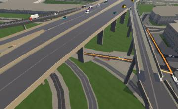 |
| P107 | périphérique | Quai de Bercy | 48.826919, 2.389852 | 128% Quai de Bercy | 4 | 22× | 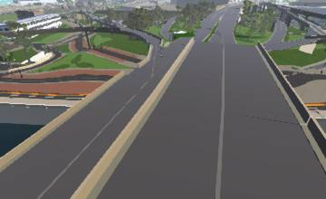 |
| P165 | périphérique | Rue Hélène et François Missoffe | 48.900279, 2.321790 | 10% Rue Hélène et François Missoffe | 0 | 16.5× | 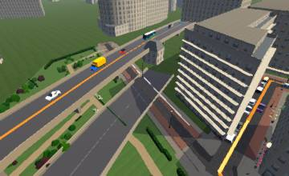 |
| P120 | périphérique | Avenue Ernest Renan | 48.830635, 2.285122 | 242% Avenue Ernest Renan | 7 | 9.6× | 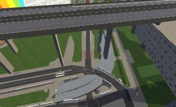 |
| P166 | périphérique | Galerie de l'Ourcq | 48.895597, 2.394723 | 91% footway (foot) | 10 | 10.6× | 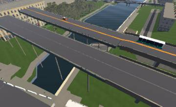 |
| B077 | bridge end | Pont de la Concorde | 48.862748, 2.319128 | 662% footway (foot) | 15 | 2.9× | 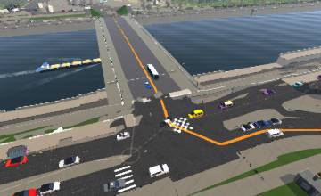 |
| P164 | périphérique | Rue Floréal | 48.899674, 2.319087 | 3% footway (foot) | 0 | 10.6× | 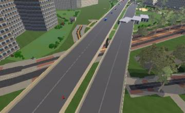 |
| P185 | périphérique | footway | 48.898448, 2.315560 | 2% Rue du 19 Mars 1962 | 0 | 10.1× | 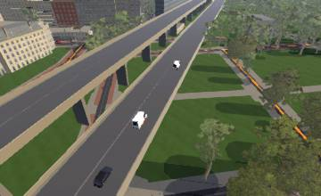 |
| B028 | bridge end | Autoroute de Normandie | 48.839901, 2.219636 | 13% Rue d'Orléans | 0 | 9.2× | 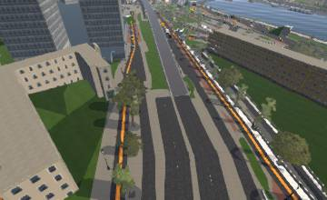 |
| P091 | périphérique | Rue Louis Pergaud | 48.816894, 2.348332 | 28% footway (foot) | 4 | 8.1× | 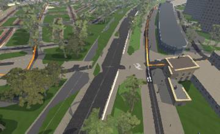 |
| B035 | bridge end | Pont de Bercy | 48.837463, 2.374049 | 195% footway (foot) | 33 | 3.3× | 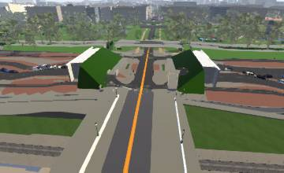 |
| B010 | bridge end | Pont de Sèvres | 48.827923, 2.225298 | 81% footway (foot) | 10 | 6.7× | 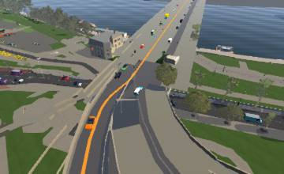 |
| P179 | périphérique | path (bridge) | 48.867867, 2.269480 | 45% footway (foot) | 1 | 7.6× | 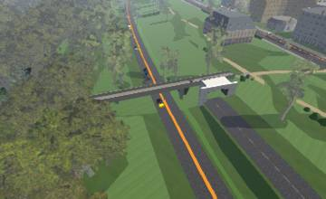 |
| B049 | bridge end | Pont de Bir Hakeim | 48.856544, 2.286620 | 66% Voie Georges Pompidou | 17 | 5.6× | 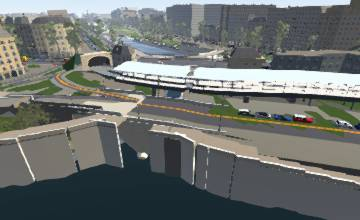 |
| P124 | périphérique | track | 48.831633, 2.404165 | 5% trunk_link | 0 | 7.9× | 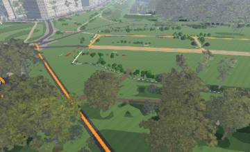 |
| B064 | bridge end | Petit-Pont - Cardinal Lustiger | 48.853143, 2.346861 | 330% footway (foot) | 30 | 1× | 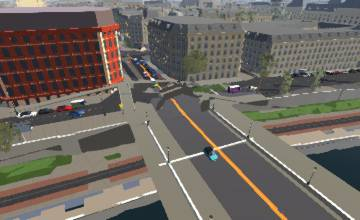 |
| P137 | périphérique | track (bridge) | 48.869444, 2.270984 | 15% track (foot) | 2 | 7× | 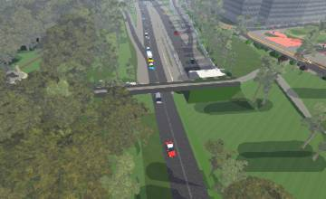 |
| P170 | périphérique | footway | 48.828520, 2.397584 | 3% Boulevard Périphérique Intérieur (bridge) | 0 | 7.3× | 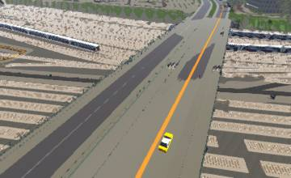 |
| B031 | bridge end | Pont du Garigliano | 48.838799, 2.269535 | 167% Quai André Citroën | 23 | 3.3× | 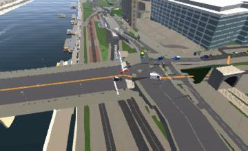 |
| B050 | bridge end | Pont de Bir Hakeim | 48.854728, 2.288423 | 122% footway (foot) | 41 | 1.1× | 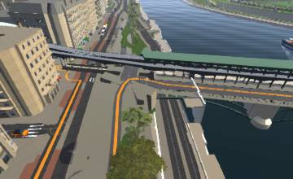 |
| B041 | bridge end | Pont de Grenelle - Cadets de Saumur | 48.849582, 2.281216 | 411% footway (foot) | 12 | 1.2× | 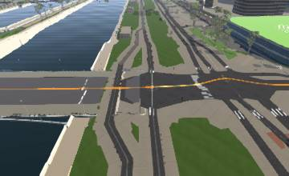 |
| P102 | périphérique | Avenue de la Porte de Montrouge (bridge) | 48.821062, 2.321026 | 52% footway (foot) | 18 | 4.4× | 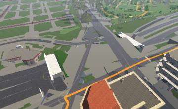 |
| P169 | périphérique | footway | 48.829155, 2.288441 | 1% Boulevard Périphérique Extérieur (bridge) | 0 | 6.7× | 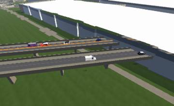 |
| B043 | bridge end | Pont d'Austerlitz | 48.845541, 2.367058 | 148% footway (foot) | 19 | 3.3× | 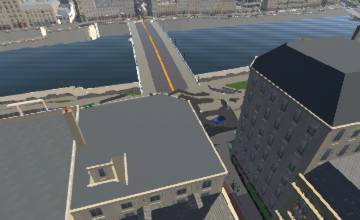 |
| B061 | bridge end | Pont Saint-Michel | 48.853846, 2.344430 | 103% footway (foot) | 23 | 3.3× | 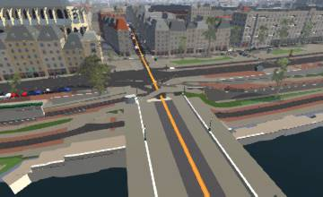 |
| B053 | bridge end | Pont du Carrousel | 48.858739, 2.332500 | 126% footway (foot) | 6 | 4.7× | 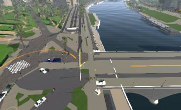 |
| P174 | périphérique | path | 48.847274, 2.254189 | 16% footway (foot) | 1 | 6.3× | 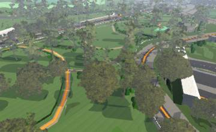 |
| B045 | bridge end | Pont de Sully | 48.849475, 2.356971 | 291% footway (foot) | 21 | 1.2× | 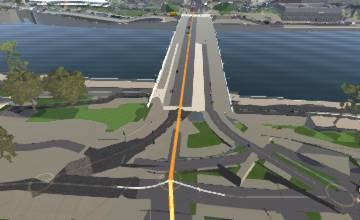 |
| P095 | périphérique | Avenue de la Porte de Choisy (bridge) | 48.817510, 2.366615 | 148% footway (foot) | 20 | 3× | 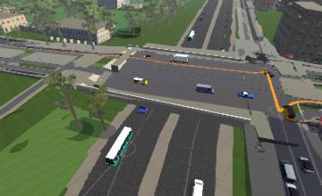 |
| B037 | bridge end | Pont de Saint-Cloud | 48.841267, 2.224719 | 104% Avenue du Maréchal de Lattre de Tassigny | 21 | 3.3× | 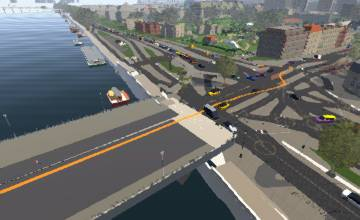 |
| B023 | bridge end | bridge | 48.827853, 2.388881 | 133% motorway_link | 9 | 3.9× | 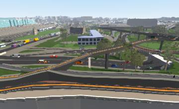 |
| P158 | périphérique | Tunnel Chaumont Pantin (tunnel) | 48.886587, 2.396976 | 42% Avenue de la Porte Chaumont | 3 | 5.4× | 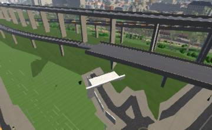 |
| P172 | périphérique | path | 48.832073, 2.405294 | 19% Boulevard Périphérique Intérieur | 2 | 5.7× | 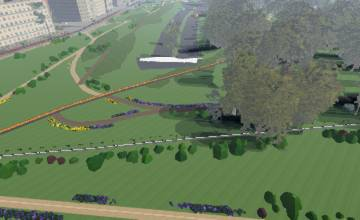 |
| P136 | périphérique | Allée des Dames | 48.860532, 2.263463 | 20% trunk_link | 3 | 5.5× | 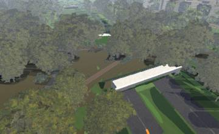 |
| B004 | bridge end | bridge | 48.821159, 2.400457 | 14% footway (foot) | 0 | 5.8× | 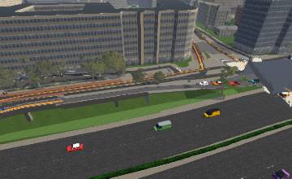 |
| B079 | bridge end | Pont de Puteaux | 48.876310, 2.246233 | 135% footway (foot) | 13 | 3.2× | 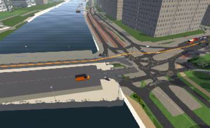 |
| B034 | bridge end | Pont de Tolbiac | 48.833489, 2.382063 | 254% footway (foot) | 17 | 1× | 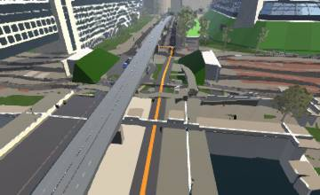 |
| B024 | bridge end | bridge | 48.827862, 2.390544 | 39% secondary_link | 8 | 4.5× | 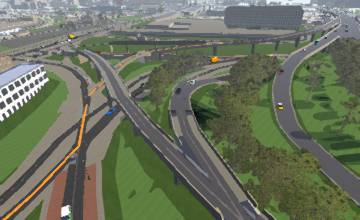 |
| B083 | bridge end | Pont de Courbevoie | 48.896519, 2.264550 | 64% footway (foot) | 17 | 3.3× | 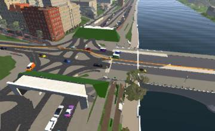 |
| B033 | bridge end | Pont de Tolbiac | 48.832381, 2.380057 | 192% footway (foot) | 4 | 3.3× | 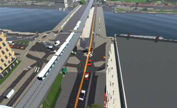 |
| B040 | bridge end | Pont Mirabeau | 48.846132, 2.276836 | 150% footway (foot) | 25 | 1.2× | 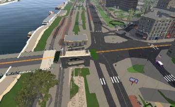 |
| B059 | bridge end | Pont de l'Archevêché | 48.851229, 2.351364 | 95% footway (foot) | 12 | 3.3× | 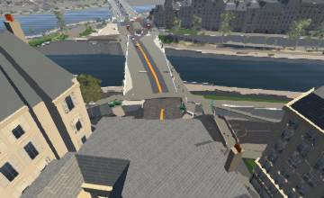 |
| B017 | bridge end | Pont d'Issy | 48.830818, 2.258156 | 115% footway (foot) | 28 | 1.1× | 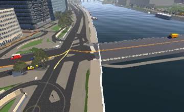 |
| B066 | bridge end | Pont Marie | 48.853229, 2.357723 | 114% footway (foot) | 10 | 3.3× | 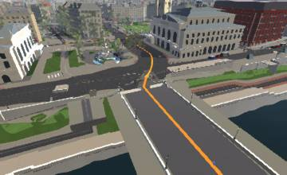 |
| P183 | périphérique | footway | 48.883337, 2.284033 | 35% Boulevard Périphérique Extérieur | 5 | 4.5× | 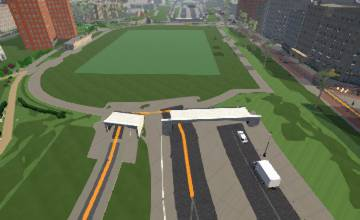 |
| P160 | périphérique | Avenue de la Porte Brunet (tunnel) | 48.883920, 2.399110 | 15% footway (foot) | 0 | 5.2× | 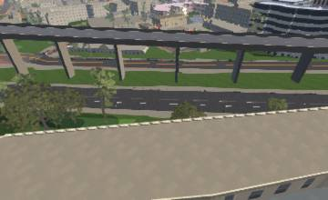 |
| B062 | bridge end | Pont Neuf | 48.858379, 2.342379 | 134% footway (foot) | 7 | 3.3× | 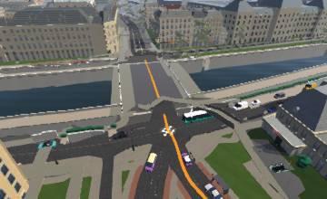 |
| B063 | bridge end | Pont Notre-Dame | 48.856629, 2.348904 | 82% footway (foot) | 12 | 3.3× | 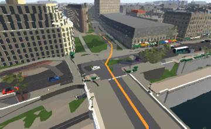 |
| B081 | bridge end | Pont de Neuilly | 48.887072, 2.252841 | 87% Quai du Président Paul Doumer | 11 | 3.3× | 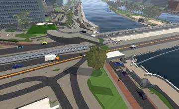 |
| P139 | périphérique | secondary_link (bridge) | 48.864023, 2.413299 | 116% Boulevard Périphérique Intérieur | 10 | 3.1× | 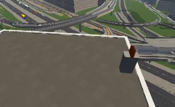 |
| B046 | bridge end | Pont Charles de Gaulle | 48.841979, 2.367998 | 79% service | 13 | 3.1× | |
| B018 | bridge end | Boulevard Périphérique Extérieur | 48.826896, 2.390309 | 128% Quai de Bercy | 6 | 3.3× | |
| B075 | bridge end | Pont des Invalides | 48.862906, 2.310430 | 104% footway (foot) | 8 | 3.3× | |
| B009 | bridge end | Pont de Sèvres | 48.828962, 2.228325 | 174% Quai Alphonse Le Gallo | 19 | 1× | |
| P093 | périphérique | Rue de la Poterne des Peupliers | 48.817781, 2.353370 | 128% Rue Jacques Destrée | 9 | 2.9× | |
| B065 | bridge end | Pont au Change | 48.857115, 2.347140 | 277% footway (foot) (bridge) | 8 | 1.5× | |
| P087 | périphérique | Avenue de la Porte d'Orléans (bridge) | 48.820164, 2.325458 | 77% Avenue de la Porte d'Orléans | 13 | 3× | |
| B071 | bridge end | Pont de l'Alma | 48.862829, 2.301910 | 106% Promenade Gisèle Halimi (foot) | 7 | 3.3× | |
| B047 | bridge end | Pont Charles de Gaulle | 48.843142, 2.370231 | 138% Quai de la Rapée | 21 | 1.2× | |
| P118 | périphérique | Avenue de la Porte de Sèvres | 48.833765, 2.277088 | 147% Rue Henri Farman | 12 | 2.3× | |
| B068 | bridge end | Pont de la Tournelle | 48.850158, 2.355042 | 86% footway (foot) | 8 | 3.3× | |
| P128 | périphérique | Avenue Courteline | 48.843931, 2.413819 | 114% Boulevard Périphérique Intérieur | 23 | 1× | |
| B020 | bridge end | Pont National | 48.828522, 2.388359 | 72% Quai de Bercy | 9 | 3.3× | |
| B051 | bridge end | Pont d'Iéna | 48.859379, 2.292920 | 68% footway (foot) | 10 | 3.2× | |
| B036 | bridge end | Pont de Bercy | 48.838444, 2.375824 | 105% footway (foot) | 23 | 1× | |
| B016 | bridge end | Pont d'Issy | 48.829775, 2.260644 | 54% Quai de la Bataille de Stalingrad | 10 | 3.3× | |
| P148 | périphérique | Avenue de la Porte du Pré Saint-Gervais | 48.881563, 2.402200 | 113% Avenue de la Porte du Pré Saint-Gervais | 9 | 2.8× | |
| B025 | bridge end | Boulevard Périphérique Intérieur | 48.825909, 2.386897 | 77% Rue Jean-Baptiste Berlier | 7 | 3.3× | |
| B056 | bridge end | Pont Royal | 48.859571, 2.329616 | 57% footway (foot) | 9 | 3.3× | |
| B055 | bridge end | Pont Royal | 48.860693, 2.330205 | 185% footway (foot) | 14 | 1.4× | |
| P152 | périphérique | Avenue de la Porte des Ternes (bridge) | 48.881386, 2.282341 | 112% footway (foot) (bridge) | 21 | 1× | |
| B048 | bridge end | Voie Mazas | 48.846683, 2.365434 | 197% footway (foot) | 12 | 1× | |
| P171 | périphérique | footway (tunnel) | 48.837956, 2.412779 | 5% footway (foot) | 0 | 4.6× | |
| B026 | bridge end | bridge | 48.820391, 2.401131 | 25% Chemin de l'Ancienne Écluse | 5 | 3.9× | |
| B039 | bridge end | Pont Mirabeau | 48.847080, 2.274570 | 63% footway (foot) | 7 | 3.3× | |
| P098 | périphérique | Rue Julia Bartet | 48.825308, 2.302258 | 60% footway (foot) | 12 | 2.8× | |
| B030 | bridge end | Boulevard Périphérique Extérieur | 48.835243, 2.271225 | 69% trunk_link | 6 | 3.3× | |
| B022 | bridge end | bridge | 48.828769, 2.390666 | 39% secondary_link | 5 | 3.7× | |
| P176 | périphérique | path | 48.856324, 2.257537 | 7% path (foot) | 0 | 4.5× | |
| P159 | périphérique | primary (tunnel) | 48.892145, 2.395475 | 79% Boulevard Sérurier | 5 | 3.2× | |
| B086 | bridge end | Pont de Levallois | 48.899194, 2.278536 | 47% unclassified | 7 | 3.3× | |
| B078 | bridge end | Pont de la Concorde | 48.864002, 2.320055 | 147% footway (foot) | 15 | 1.2× | |
| B069 | bridge end | Pont de Suresnes | 48.866504, 2.230901 | 45% path (foot) | 7 | 3.3× | |
| P133 | périphérique | Place de la Porte de Montreuil | 48.853507, 2.414059 | 76% Boulevard Périphérique Intérieur | 8 | 2.8× | |
| B000 | bridge end | Pont Nelson Mandela | 48.819046, 2.399384 | 61% Quai Jean Compagnon | 5 | 3.2× | |
| B006 | bridge end | Pont d'Ivry | 48.814549, 2.409211 | 48% Quai Auguste Deshaies | 5 | 3.3× | |
| P143 | périphérique | Avenue de Neuilly | 48.878253, 2.280563 | 48% footway (foot) | 23 | 1× | |
| P104 | périphérique | Avenue de la Porte de Châtillon (bridge) | 48.822575, 2.314553 | 37% footway (foot) | 11 | 2.8× | |
| B042 | bridge end | Pont de Grenelle - Cadets de Saumur | 48.850965, 2.278997 | 75% Voie Georges Pompidou | 2 | 3.3× | |
| P096 | périphérique | Avenue de la Porte d'Ivry (bridge) | 48.819539, 2.373275 | 63% footway (foot) (bridge) | 21 | 1.3× | |
| B074 | bridge end | Pont Alexandre III | 48.864311, 2.313624 | 30% footway (foot) | 6 | 3.3× | |
| P144 | périphérique | Rue du Général Anselin | 48.875949, 2.277533 | 103% primary_link | 16 | 1× | |
| B084 | bridge end | Pont du Maréchal-Juin | 48.893811, 2.267490 | 63% footway (foot) | 20 | 1× | |
| B082 | bridge end | Pont de Neuilly | 48.886047, 2.256030 | 110% primary | 15 | 1× | |
| P181 | périphérique | footway | 48.873063, 2.411982 | 8% footway (foot) | 0 | 4× | |
| P180 | périphérique | footway | 48.878810, 2.408187 | 26% Boulevard Périphérique Intérieur | 11 | 2.7× | |
| B003 | bridge end | Pont Nelson Mandela | 48.819677, 2.398129 | 81% footway (foot) | 16 | 1× | |
| P145 | périphérique | primary | 48.879715, 2.281698 | 70% Boulevard Périphérique Intérieur | 15 | 1.7× | |
| B060 | bridge end | Pont Louis-Philippe | 48.854220, 2.354795 | 88% footway (foot) | 15 | 1× | |
| P122 | périphérique | Avenue François Fresneau | 48.833727, 2.408742 | 6% Avenue François Fresneau (foot) | 0 | 3.8× | |
| B032 | bridge end | Pont du Garigliano | 48.839850, 2.267223 | 70% Quai Louis Blériot | 16 | 1× | |
| P155 | périphérique | Boulevard d'Aurelle de Paladines (bridge) | 48.882168, 2.283116 | 87% Boulevard Périphérique Extérieur | 14 | 1× | |
| B057 | bridge end | Pont d'Arcole | 48.855912, 2.350775 | 140% footway (foot) | 8 | 1× | |
| P184 | périphérique | footway | 48.890854, 2.299304 | 28% Boulevard Périphérique Extérieur | 9 | 2.5× | |
| P110 | périphérique | Avenue de la Porte de Charenton | 48.829522, 2.401199 | 27% Boulevard Périphérique Intérieur | 6 | 2.8× | |
| B080 | bridge end | Pont de Puteaux | 48.878176, 2.242707 | 116% footway (foot) | 10 | 1× | |
| P097 | périphérique | Place des Insurgés de Varsovie | 48.827317, 2.292845 | 97% Boulevard Périphérique Extérieur | 11 | 1.3× | |
| P141 | périphérique | Route de la Porte Dauphine à la Porte des Sablons | 48.872305, 2.274194 | 44% footway (foot) | 3 | 2.8× | |
| B021 | bridge end | Pont National | 48.827236, 2.385701 | 112% footway (foot) | 9 | 1× | |
| P092 | périphérique | Avenue Pierre de Coubertin | 48.816500, 2.344034 | 92% Place Mazagran | 11 | 1.1× | |
| P140 | périphérique | primary | 48.877283, 2.279614 | 71% Boulevard Périphérique Intérieur | 13 | 1.4× | |
| B067 | bridge end | Pont de Sully | 48.850772, 2.361282 | 86% footway (foot) | 11 | 1× | |
| B008 | bridge end | Pont de Sèvres | 48.827569, 2.224124 | 116% Grande Rue | 8 | 1.1× | |
| B038 | bridge end | Pont de Saint-Cloud | 48.841464, 2.222494 | 73% Quai Carnot | 12 | 1× | |
| P138 | périphérique | Avenue Ibsen (bridge) | 48.867137, 2.413429 | 103% trunk_link | 9 | 1× | |
| P090 | périphérique | Passerelle du Cambodge (bridge) | 48.816823, 2.336867 | 69% footway (foot) | 11 | 1.6× | |
| B014 | bridge end | Pont Daydé | 48.824917, 2.237898 | 3% Pont Daydé (bridge) | 0 | 3.3× | |
| B054 | bridge end | Pont du Carrousel | 48.859952, 2.333263 | 82% footway (foot) | 10 | 1× | |
| P190 | périphérique | motorway (bridge) | 48.866407, 2.413188 | 121% Boulevard Périphérique Extérieur | 6 | ||
| P103 | périphérique | Rue de la Légion Étrangère (bridge) | 48.820445, 2.324190 | 56% footway (foot) | 12 | 1× | |
| P116 | périphérique | Rue Pégoud | 48.834793, 2.266946 | 64% Rue Pégoud | 11 | 1× | |
| P177 | périphérique | path | 48.857175, 2.258423 | 19% path (foot) | 1 | 2.9× | |
| B058 | bridge end | Pont Neuf | 48.856223, 2.340546 | 59% footway (foot) | 11 | 1× | |
| P150 | périphérique | Rue de Courcelles | 48.888731, 2.293554 | 28% footway (foot) | 1 | 2.8× | |
| P175 | périphérique | footway (bridge) | 48.849356, 2.414942 | 31% Rue de Lagny (bridge) | 4 | 2.4× | |
| P101 | périphérique | Avenue Georges Lafenestre (bridge) | 48.823852, 2.308829 | 81% footway (foot) (bridge) | 8 | 1× | |
| P105 | périphérique | Avenue de la Porte de Vitry | 48.821496, 2.378983 | 16% Avenue Pierre Semard | 1 | 2.8× | |
| P131 | périphérique | Route des Lacs à Passy | 48.858333, 2.261030 | 16% trunk_link | 1 | 2.8× | |
| P187 | périphérique | trunk_link (bridge) | 48.816571, 2.364377 | 85% Boulevard Périphérique Extérieur | 7 | ||
| B052 | bridge end | Pont d'Iéna | 48.860357, 2.291387 | 42% footway (foot) | 11 | 1× | |
| P142 | périphérique | Route de Suresnes | 48.871480, 2.273488 | 21% footway (foot) | 1 | 2.7× | |
| B012 | bridge end | Boulevard des Îles | 48.824980, 2.248609 | 49% primary | 10 | 1.1× | |
| P130 | périphérique | Avenue de la Porte de Vincennes | 48.846328, 2.414312 | 46% footway (foot) | 10 | 0.9× | |
| P163 | périphérique | Avenue de la Porte d'Asnières (bridge) | 48.892014, 2.301462 | 55% Boulevard Périphérique Intérieur | 9 | 1× | |
| P100 | périphérique | Avenue de la Porte de Vanves | 48.824789, 2.304049 | 15% Boulevard Périphérique Intérieur | 0 | 2.8× | |
| P114 | périphérique | Avenue Georges Lafont | 48.836712, 2.256086 | 13% trunk_link | 0 | 2.8× | |
| P157 | périphérique | Boulevard de Reims | 48.890221, 2.298153 | 5% footway (foot) | 0 | 2.8× | |
| B070 | bridge end | Pont de Suresnes | 48.867111, 2.228587 | 64% primary_link | 7 | 1× | |
| B011 | bridge end | Pont Renault | 48.826830, 2.233765 | 91% footway (foot) | 4 | 1.2× | |
| P121 | périphérique | Rue Édouard Lartet | 48.839817, 2.413543 | 50% Rue Édouard Lartet | 8 | 0.6× | |
| B073 | bridge end | Pont Alexandre III | 48.862973, 2.313463 | 48% Pont Alexandre III (foot) | 8 | 1× | |
| P109 | périphérique | Quai d'Ivry | 48.826036, 2.387243 | 77% Rue Jean-Baptiste Berlier | 5 | 1× | |
| B013 | bridge end | Boulevard des Îles | 48.821852, 2.250049 | 52% Quai de la Bataille de Stalingrad | 7 | 1.1× | |
| P117 | périphérique | Voie AD/15 | 48.834748, 2.265593 | 19% Quai d'Issy-les-Moulineaux | 3 | 2.2× | |
| B007 | bridge end | Pont d'Ivry | 48.814543, 2.411173 | 43% Quai Blanqui | 7 | 1× | |
| B029 | bridge end | Boulevard Périphérique Extérieur | 48.834953, 2.262127 | 46% footway (foot) | 6 | 1× | |
| P129 | périphérique | Rond-Point de la Porte de Vincennes | 48.847073, 2.414693 | 43% footway (foot) | 6 | 1.3× | |
| P094 | périphérique | Avenue de la Porte d'Italie (bridge) | 48.816070, 2.360646 | 62% footway (foot) | 4 | 1× | |
| P188 | périphérique | trunk_link | 48.835250, 2.270713 | 69% trunk_link | 3 | ||
| P113 | périphérique | Quai Saint-Exupéry | 48.834945, 2.262259 | 46% footway (foot) | 5 | 1× | |
| P186 | périphérique | Tunnel d'Italie (tunnel) | 48.816411, 2.357213 | 57% primary | 3 | ||
| P125 | périphérique | Boulevard d'Auteuil | 48.845200, 2.254836 | 31% footway (foot) | 5 | 1× | |
| P119 | périphérique | Rue de la Porte d'Issy | 48.832204, 2.280916 | 28% footway (foot) | 5 | 1× | |
| B044 | bridge end | Pont d'Austerlitz | 48.844436, 2.365086 | 50% Bretelle de contournement de la place Valhubert | 2 | 1× | |
| P162 | périphérique | Avenue de la Porte de Clichy | 48.896517, 2.309728 | 30% Avenue de la Porte de Clichy | 4 | 1.2× | |
| P153 | périphérique | Avenue de la Porte de Champerret | 48.886055, 2.288682 | 35% footway (foot) | 3 | 1× | |
| B072 | bridge end | Pont de l'Alma | 48.864105, 2.301787 | 24% Avenue de New York | 4 | 1.2× | |
| P173 | périphérique | footway | 48.853901, 2.253625 | 33% Boulevard Périphérique Intérieur | 3 | 1× | |
| P182 | périphérique | footway | 48.876883, 2.409131 | 12% footway (foot) | 0 | 2× | |
| P192 | périphérique | trunk_link | 48.900330, 2.384419 | 41% trunk_link | 2 | ||
| P106 | périphérique | Rue Bruneseau | 48.824700, 2.384017 | 39% Rue Bruneseau | 2 | 1× | |
| P112 | périphérique | Passerelle périphérique (bridge) | 48.837388, 2.254978 | 36% footway (foot) | 2 | 1.4× | |
| B002 | bridge end | Pont Nelson Mandela | 48.821715, 2.399651 | 45% footway (foot) | 1 | 1.3× | |
| B015 | bridge end | Passerelle du Parc de l'Europe | 48.825309, 2.257568 | 39% service | 1 | 1.1× | |
| B019 | bridge end | Boulevard Périphérique Extérieur | 48.820768, 2.377069 | 36% footway (foot) | 1 | 1× | |
| B027 | bridge end | Autoroute de Normandie | 48.848610, 2.227679 | 25% Autoroute de Normandie | 2 | 1.1× | |
| P099 | périphérique | Avenue de la Porte Brancion | 48.825611, 2.300427 | 32% footway (foot) | 1 | 0.9× | |
| P115 | périphérique | Avenue de la Porte de Saint-Cloud | 48.838658, 2.254370 | 30% footway (foot) | 1 | 1.2× | |
| B001 | bridge end | Pont Nelson Mandela | 48.821062, 2.401399 | 19% secondary_link (bridge) | 2 | 1× | |
| P168 | périphérique | Rue du Chemin de Fer | 48.899452, 2.392356 | 28% footway (foot) | 1 | 1× | |
| P127 | périphérique | Avenue de la Porte d'Auteuil | 48.847956, 2.253486 | 28% trunk_link | 1 | 1× | |
| P156 | périphérique | Rue Raymond Pitet | 48.889672, 2.296934 | 5% Rue Raymond Pitet | 0 | 1.8× | |
| P154 | périphérique | Rue du Caporal Peugeot | 48.886784, 2.289863 | 21% Boulevard Périphérique Extérieur | 1 | 1× | |
| P167 | périphérique | Rue de la Clôture | 48.897471, 2.394242 | 18% Rue de la Clôture | 1 | 1× | |
| P088 | périphérique | Avenue André Rivoire | 48.818401, 2.332813 | 16% Boulevard Périphérique Intérieur | 1 | 1× | |
| P123 | périphérique | Avenue Daumesnil | 48.834318, 2.409845 | 16% footway (foot) | 1 | 1× | |
| P111 | périphérique | primary_link | 48.836099, 2.257114 | 15% footway (foot) | 1 | 1.1× | |
| B005 | bridge end | bridge | 48.821929, 2.398507 | 15% secondary | 0 | 1× | |
| P189 | périphérique | motorway (bridge) | 48.849245, 2.252403 | 15% trunk_link | 0 | ||
| P147 | périphérique | Place du Maquis du Vercors | 48.877657, 2.408661 | 13% footway (foot) | 0 | 1.2× | |
| P178 | périphérique | path | 48.862418, 2.264619 | 11% Boulevard Périphérique Intérieur | 0 | 1.1× | |
| B076 | bridge end | Pont des Invalides | 48.864223, 2.310366 | 11% Cours Albert-Iᵉʳ | 0 | 1× | |
| P149 | périphérique | Rue de Noisy-le-Sec | 48.872354, 2.412451 | 11% footway (foot) | 0 | 1× | |
| P134 | périphérique | Voie BG/16 | 48.864153, 2.266421 | 11% footway (foot) | 0 | 1× | |
| P151 | périphérique | Avenue de la Porte de Villiers | 48.884470, 2.285782 | 11% footway (foot) | 0 | 1× | |
| P146 | périphérique | Rue Léon Frapié | 48.873720, 2.411428 | 7% footway (foot) | 0 | 1× | |
| P089 | périphérique | Passerelle des Arts et Métiers (bridge) | 48.817695, 2.334046 | 7% footway (foot) | 0 | 1.3× | |
| P191 | périphérique | trunk_link | 48.900456, 2.386967 | 4% trunk_link | 0 | ||
| P161 | périphérique | Place de la Porte de Pantin | 48.889807, 2.396374 | 3% footway (foot) | 0 | 1.1× | |
| P132 | périphérique | Route de Boulogne à Passy | 48.851860, 2.252342 | 3% Chemin des Vieux Chênes (foot) | 0 | 1× | |
| P126 | périphérique | Rue Claude Farrère | 48.842640, 2.254018 | 3% footway (foot) | 0 | 1× | |
| P135 | périphérique | Voie BG/16 | 48.863114, 2.265144 | 2% track (foot) | 0 | 1× | |
| B085 | bridge end | Pont de Levallois | 48.901976, 2.275510 | 2% footway (foot) (bridge) | 0 | 0.4× |